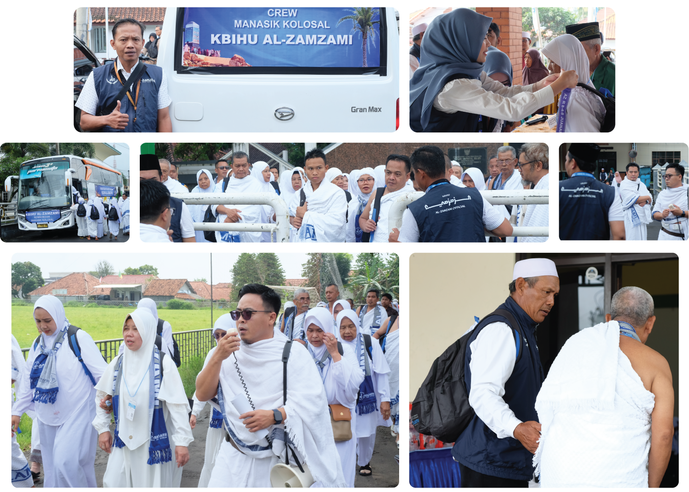
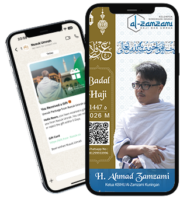

Haji Reguler Bimbingan KBIHU
Gerbang Anda Menuju Perjalanan Seumur Hidup
KBIHU Al-Zamzami merupakan lembaga resmi mitra Kementerian Haji dan Umrah yang bertugas memberikan bimbingan, manasik, dan pendampingan bagi jemaah haji reguler dan umrah. Kami hadir menemani persiapan Anda mulai dari Tanah Air, Tanah Suci hingga kembali lagi ke Tanah Air.
PANDUAN PERJALANAN
Tahapan Menuju Baitulloh
Luruskan Niat dan Pastikan Kesiapan Ibadah Haji Anda Bersama Kami.
0. Manasik Ta'aruf
Pengenalan tentang KBIHU Al-Zamzami, update regulasi haji terbaru.
1. Pemberkasan
Pendataan ulang kembali data jemaah untuk keperluan pemasporan visa biometric, dan lain-lain.
2. Manasik Awal
Panduan dasar tentang Hukum Haji dan Umrah dari berbagai madzhab, fadilah atau keutamaan Ritual Haji dan Umrah.
3. Manasik Pemantapan
Pemahaman lebih spesifik dan problem solving tentang manasik awal dalam perjalanan haji dan umrah.
4. Manasik Kolosal
Praktik lanjutan tentang manasik haji dan umrah dalam kondisi nyata. Praktik ini lebih dikenal dengan istilah "Manasik Kolosal".
5. Kesehatan Haji
Membantu persiapan kesehatan dan kelayakan (Istithaah) Jemaah haji harus memenuhi dengan berkoordinasi dengan Dinas Kesehatan setempat.
6. Visa Biometric
Pendampingan dalam proses pengambilan biometrik untuk visa haji.
7. Pelunasan Haji
Pendampingan dalam proses pelunasan biaya perjalanan haji.
8. Persiapan Keberangkatan
Memandu jemaah dalam persiapan keberangkatan haji terkait perlengkapan barang bawaan dan lain-lain.
LAYANAN KAMI
Puluhan tahun melayani, Ribuan Jemaah telah Kami bersamai. Kini, Giliran Anda.
Bimbingan Manasik
Program Bimbingan Manasik Haji & Umrah dikhususkan untuk jemaah haji yang telah mendaftar haji reguler dan telah memiliki porsi haji daftar tunggu yang memerlukan pendampingan dan bimbingan dalam menjalankan ibadah haji dan umrah sesuai dengan tuntunan syariat Islam. Pergi haji bukan hanya sekadar perjalanan fisik, tetapi juga ilmu tentangnya mestilah dipelajari dengan baik agar syarat dan rukunnya tepat sempurna, sah dan batalnya dapat dijaga, serta amalan hajinya tidak sia-sia.
Konsultasi
Masih bingung atau memiliki pertanyaan seputar porsi cadangan, lansia, pendampingan, kursi roda atau kebutuhan khusus lainnya? Jangan ragu untuk bertanya, tim kami siap membantu Anda dengan sepenuh hati.
Hubungi KamiHadiahkan Badal Haji untuk Orang Terkasih
Sebagai bentuk BAKTI Spiritual Terbaik kita untuk orang tua/keluarga yang telah meninggal atau sakit kronis sehingga tidak mampu berhaji sendiri.
Kuota terbatas !

عَنِ ابْنِ عَبَّاسٍ رَضِيَ اَللّٰهُ عَنْهُمَا قَالَ: كَانَ اَلْفَضْلُ بْنُ عَبَّاسٍ رَدِيفَ رَسُولِ اَللّٰهِ ﷺ. فَجَاءَتِ اِمْرَأَةٌ مِنْ خَثْعَمَ، فَجَعَلَ اَلْفَضْلُ يَنْظُرُ إِلَيْهَا وَتَنْظُرُ إِلَيْهِ، وَجَعَلَ اَلنَّبِيُّ - ﷺ - يَصْرِفُ وَجْهَ اَلْفَضْلِ إِلَى الشِّقِّ اَلْآخَرِ. فَقَالَتْ: يَا رَسُولَ اَللّٰهِ، إِنَّ فَرِيضَةَ اَللّٰهِ عَلَى عِبَادِهِ فِي اَلْحَجِّ أَدْرَكَتْ أَبِي شَيْخًا كَبِيرًا، لَا يَثْبُتُ عَلَى اَلرَّاحِلَةِ، أَفَأَحُجُّ عَنْهُ؟ قَالَ: نَعَمْ. وَذَلِكَ فِي حَجَّةِ اَلْوَدَاعِ. (مُتَّفَقٌ عَلَيْهِ وَاللَّفْظُ لِلْبُخَارِيِّ)
Diriwayatkan dari Ibnu Abbas ra, ia berkata: 'Al-Fadhl bin Abbas menjadi pengawal Rasulullah saw. Lalu datang perempuan dari Khats'am (salah satu kabilah dari Yaman). Sontak al-Fadlu memandang perempuan itu dan perempuan itu pun memandangnya. Seketika itu pula Nabi saw memalingkan wajah al-Fadhl sisi lain (agar tidak melihatnya). Lalu perempuan itu berkata: 'Wahai Rasulullah, sungguh kewajiban haji dari Allah kepada hamba-hambanya telah menjadi kewajiban bagi ayahku saat ia tua renta dan tidak mampu berkendara. Apakah aku boleh berhaji sebagai ganti darinya?' Rasulullah saw menjawab: 'Ya'. Peristiwa itu terjadi dalam haji Wada'. (Muttafaq 'Alaih, dan ini redaksi al-Bukhari)
Fasilitas
- Sertifikat/Piagam Badal Haji
- Merchandise and Souvenir
- Dokumentasi Foto/Video
- Dilaksanakan langsung oleh para asatidz dan muthawwif kami yang berpengalaman dan berdomisili di Makkah.
Persyaratan
- Beragama Islam
- Yang akan dibadalkan berstatus sudah meninggal atau sakit kronis (mengalami udzur syar'i)
- Perwakilan mengisi formulir pendaftaran offline/online
- Membayar biaya sesuai harga
Qurban di Tanah Suci
Bagi individu yang tidak berhaji, qurban (udhiyah) tetap disunnahkan hukumnya dan dapat dilakukan di mana saja, termasuk jika ingin berkurban di Tanah Suci (Mekah/Mina) melalui lembaga resmi. Ibadah qurban bagi yang tidak berhaji adalah sunnah muakkadah (yang dikuatkan) yang mampu finansialnya.
Wakaf Quran
Wakaf Al-Qur'an di Masjidil Haram adalah investasi akhirat yang utama, menawarkan pahala yang terus mengalir (sedekah jariyah) dan berpotensi dilipatgandakan hingga 100.000 kali lipat. Mushaf yang diwakafkan akan digunakan oleh jutaan jamaah dari seluruh dunia, menjamin keberkahan tempat suci dan pahala abadi yang terus mengalir meskipun wakif telah meninggal dunia.